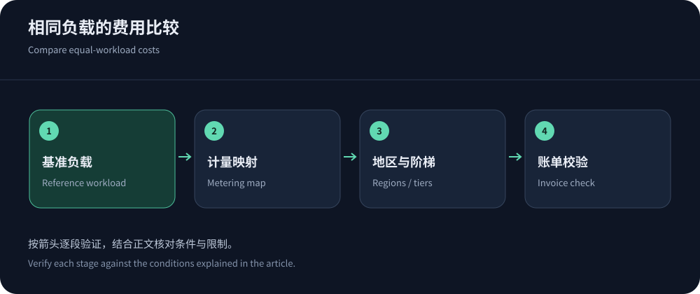
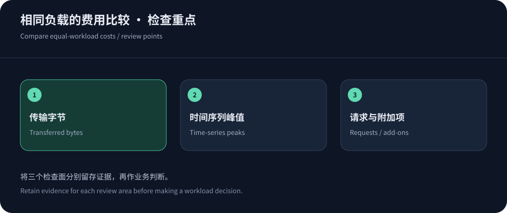

比较价格前，先让分母相同
一家服务商给出每GB价格，另一家给出月费，第三家按带宽统计收费，它们不能直接排序。必须先确定相同用户地区、交付量、请求、源站和安全功能，再分别算出费用。否则比较的可能是不同服务范围，低价只是遗漏了某些项目。本文重点解释如何做可复查的费用分析，而不是用未经证实的折扣制作最低价榜单。
公开资料核实于2026年10月14日。阶梯、区域、税费、承诺期和活动会变化，采购前需要重新确认。若目标是了解各种计费原理，可先看CDN收费标准；这里更关注同一负载如何映射到不同产品。
建立基准负载，不使用厂商替你挑选的样本
从实际日志提取用户地区、请求数、字节、缓存状态与对象类型；没有历史数据时，明确把预测标为假设。不要让每家分别选择对自己有利的流量构成。对象大小、动态比例和活动集中程度都会改变成本，尤其是小对象高请求和大对象低请求，两者可能有相同出网却产生不同费用。
预算还需要源站所在地、云出网方式、缓存填充与日志保留。请求命中率不能直接拿来估算字节回源，因为未命中的可能恰好是大文件。将请求与字节两个维度分开，保留发布时间、失效和预热造成的峰值。模型输入越清楚，供应商越容易给出可核对答复。


一个假设表，展示该怎么算而非承诺多少钱
下面假设某网站每月有亚太与欧美交付，并存在动态请求和发布填充。表格不填未经核实的合同折扣，也不输出貌似精确的全包月价。将每个输入乘以实际报价中的对应价格，再加入固定项；不同产品没有的计量项，应确认是否包含或被其他项目替代。
| 输入项 | 假设或计算方式 | 需要报价确认 |
|---|---|---|
| 交付量 | 假设亚太800GiB、欧美1200GiB，分别套用地区阶梯，不能合成一个平均单价。 | 地区如何归属，GiB或GB，是否按账户合并阶梯。 |
| 请求 | 假设每月两千万次，单独列出失败、拦截和边缘函数调用是否包含。 | 免费额度、请求单位和安全检查是否再次计费。 |
| 回源与填充 | 从字节未命中与发布计划估算，不能直接用请求命中率乘出网。 | 源站云出网、中间缓存填充和跨区传输是否分别收费。 |
| 带宽 | 使用相同流量的时间序列，保留活动尖峰并按合同统计，不用月平均替代。 | 采样周期、百分位或峰值、保底与超限价格。 |
| 固定与运行 | 加入套餐、日志、安全规则、支持和维护时间，避免只显示传输小计。 | 承诺期、币种、税费、升级和退出条款。 |
公开定价中，容易漏掉的条目
Fastly价格将交付、请求和安全分别列示，部分套餐还带使用范围条件；网页套餐不能自动套用视频业务。Google Cloud CDN定价区分缓存交付、填充和查询，单位也要保留。阿里云CDN计费概览则可用于确认该平台提供的计费模式及适用边界。
CloudFront价格当前同时有固定套餐与按量选择；Azure Front Door价格还包含基础费。以上页面只能提供各自字段，不能直接生成跨产品公平总价。应检查安全、源站和支持范围是否一致，公开页面没有说明的地方向供应商确认。
用账期边界解释一次看似异常的差额
控制台可能采用滚动窗口，发票采用固定账期，日志又使用另一时区。月末活动和迟到记录因此容易落入不同区间。核对前固定起止时间、币种、单位和产品范围，记录抵扣、退款与税费是否独立显示。若这些口径没有统一，继续提高表格精度也不能让比较更准确。
流量平稳与集中爆发，会产生不同结果
如果内容持续被访问，按流量模型通常比较容易由字节估算；若发布后集中下载，带宽承诺和峰值统计就更关键。不能断言某种模式永远便宜，应该用同一份时间序列计算两种结果。统计分位只在合同明确采用时适用，还要知道采样、缺测和异常区间如何处理。
活动前预热可能改善部分用户体验，却会增加填充请求与源站负载。扩大缓存也可能降低回源，但缓存失效频繁时收益会改变。预算应保留这些变量，让运营人员能调整活动规模、版本发布和保留期限，而不必等月末账单才知道影响。优化成本不等于关闭所有安全与日志，应避免把短期节省变成事故中的盲区。
攻击与异常请求，要做单独敏感性分析
增加请求数而保持字节较小，可以检查请求和安全费风险；增加大文件下载，可以检查出网和带宽风险；增加缓存未命中，则会同时影响填充和源站。这里是费用敏感性计算，不需要也不应该对公共网站制造攻击。分别询问拦截、清洗、超限和费用保护的条件，不把宣传“无限”当作无限资源承诺。
给预算设置分层提醒，明确负责人和可执行动作，如核查流量来源、限制异常接口、修正碎片化缓存键或临时申请额度。不能让预算告警自动切到裸源站，导致降低费用的同时失去保护。更多部署注意事项可参考购买指南，费用控制应与恢复能力一起设计。


实际账单是模型的校验，不是意外通知
试点后把请求、字节与费用按同一时区和单位对齐。差异可能来自重试、错误响应、日志采样、阶梯合并或账期边界，应逐项核对。保存价格版本、兑换汇率、税费和合同附件，让后续人员能够重算；不要只保存一张合计截图。
续费时用相同基准负载计算新价格，再另外计算业务增长。这样可以分辨供应商调价和用户结构变化。可靠的CDN价格比较不一定给出一个永恒最便宜的名字，但应让采购者知道哪项支出可控、哪项条件未知，以及在业务变化时如何重新判断。